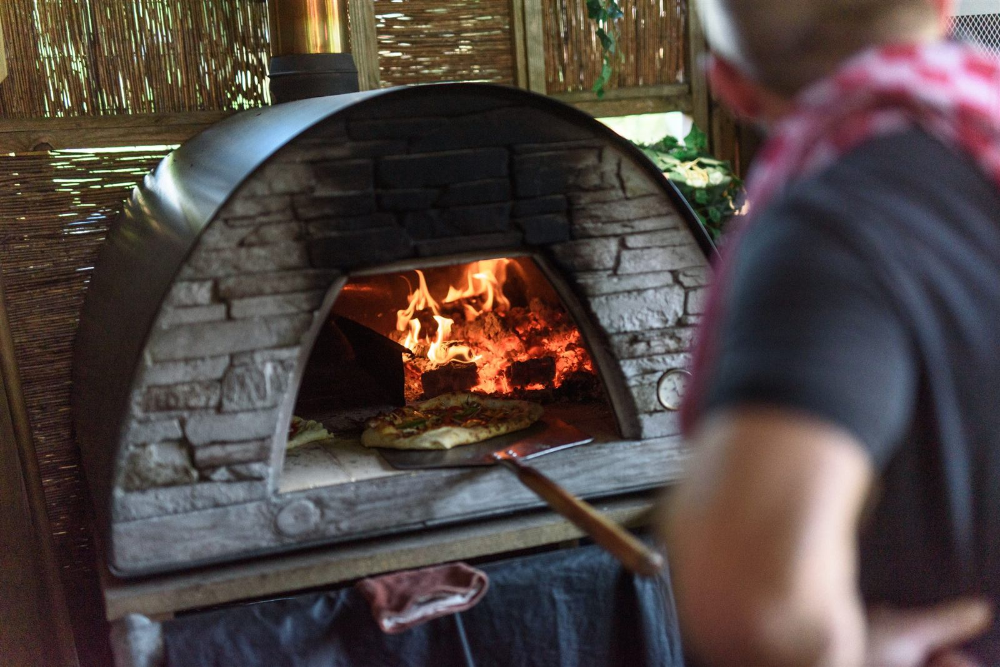

Pizza party
Regelmatig organiseren we een pizza-avond. Onze chef-pizzabakker bakt dan de heerlijkste pizza’s met een luchtige desembodem. Voor een vast bedrag geniet je van een avond in Italiaanse stijl: een uitgebreid Italiaans buffet, onbeperkt pizzapunten proeven en allerlei verrassende smaken. Een avond vol gezelligheid, top wijnen en plezier voor jong en oud.
€ 29,50 per persoon€ 15 kinderen
Een pizza-middag of -avond tijdens je eigen feestje bij BUUV.? Dat organiseren we voor jou vanaf ca. 40 personen.